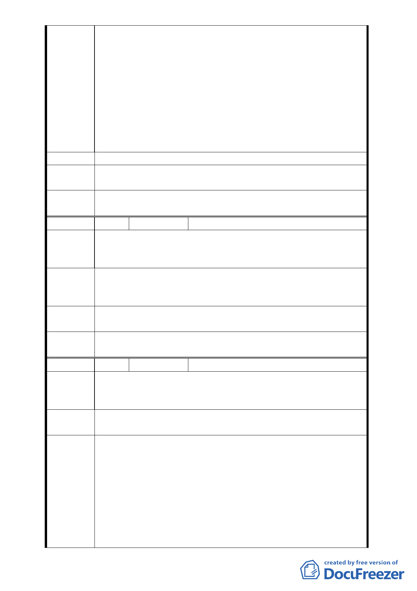

來討論道路的變更與規劃設計方式。
4. 本案變更後用地範圍都在我們新仁里裡面，如變更通過道路
開發後將對本里造成非常嚴重的影響，但都市計畫書的內容
竟然在公告半個月才通知本里，實在非常過份。本里要求都
發局應該借用松山高中的場地，在本案公告期間期滿前，到
我們新仁里來召開說明會，讓本里里民可以充分了解整個案
子的規劃內容。
5. 都市計畫應以百年大計的眼光來規劃整個城市的發展，台北
東區的商業設施已經飽和，建議應將松山菸廠規劃為森林運
動公園。
建議辦法
－
專案小組
審查結論
同編號 2
委員會決
議
同編號 1
編 號 11
陳情人 吳汪憲英等 5 人
1. 本巷弄平日即為基隆路與忠孝東路四段的交通疏通的緩衝
陳情理由 巷道，交通擁擠、事故頻傳，多年從未改善。
2. 46 弄與 553 巷 42 號交叉口多有交通事故，不宜再增加車流。
此一引道建造本為多餘，市府捷運站四週交通擁塞，疏通不
建議辦法 易，何有再引進更多車流道理？不要再浪費公帑，拿出各位
專家應有的專業，慎思。
專案小組
審查結論
同編號 2
委員會決
議
同編號 1
編 號 12
陳情人 王國楹
忠孝東路四段 553 巷只是一條巷道， 依照常理判斷，實
陳情理由 在不行再接一條路來當做大馬路使用。新仁里住戶的反對聲浪
在這次的會議中表露無遺。
建議辦法
現在的「計畫案」土地這麼大，難道蓋不出一條馬路連接市民
大道至逸仙路。如果不會便民，那至少可以不要擾民。
1.同意本案文化體育園區連通光復北路之北側道路都市計畫變
更。
2.本案公展計畫圖北側道路連通忠孝東路四段 553 巷之虛線刪
專案小組 除，並請市府教育局再檢討文化體育園區北側道路其東側之
審查結論 迴轉道迴轉半徑規劃。
3.本案原公展計畫書往北連通市民大道之道路用地暫不予變
更，在不影響台鐵機廠的運作前提下，由台灣鐵路管理局先
行提供使用，並請市府教育局與台灣鐵路管理局共同會勘，
- 13 -